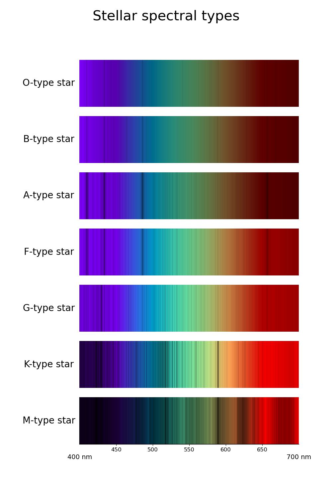
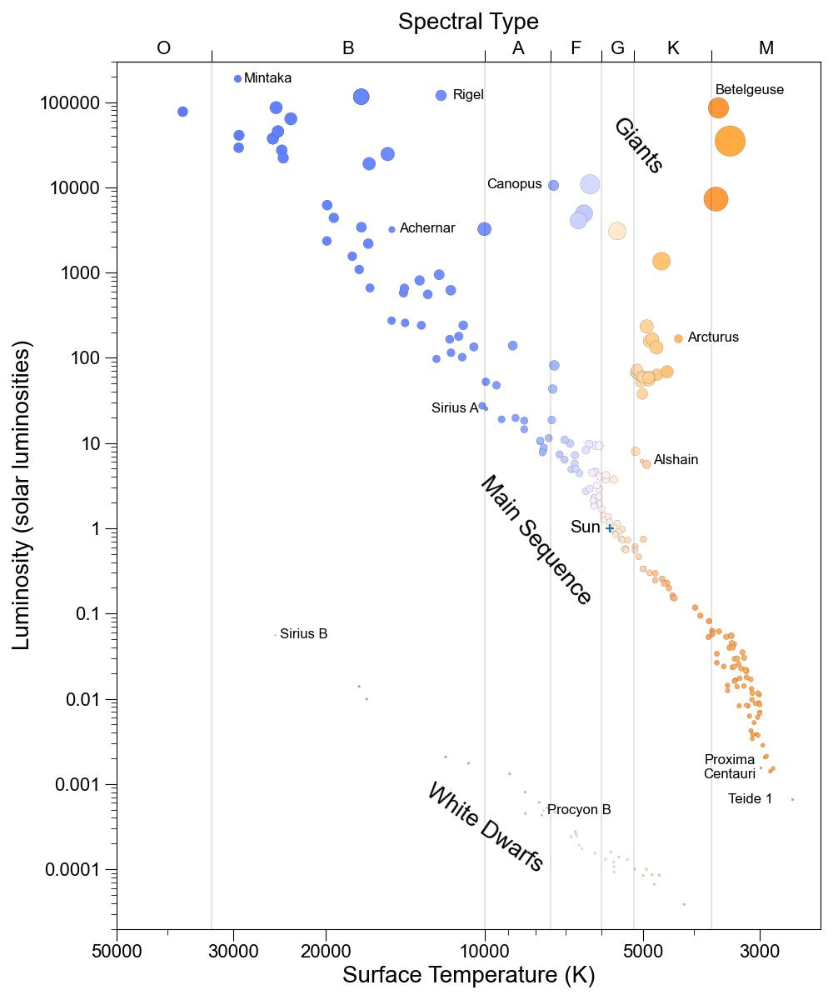
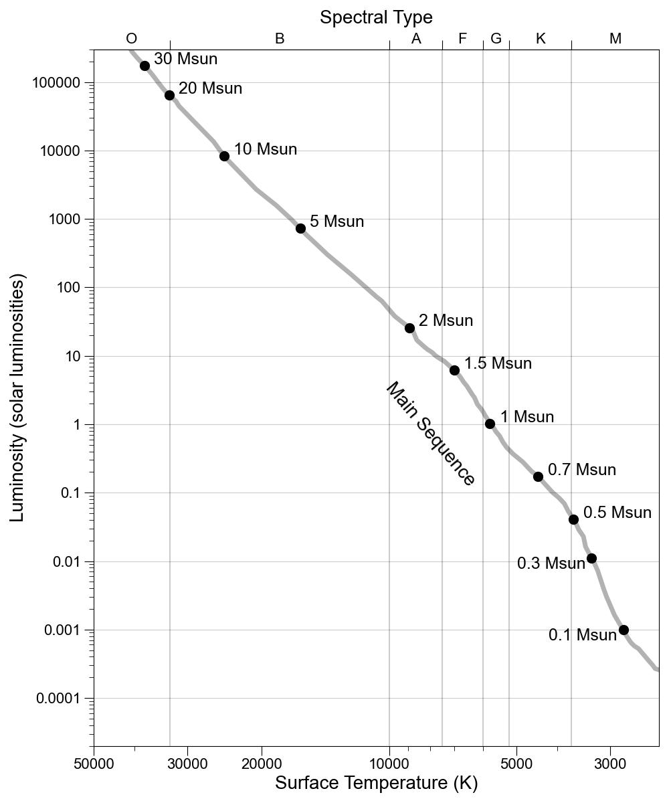

- Python Jupyter notebook for producign main-sequance spectral type spectra based on sample code provided by the International Astronomical Union Office of Education (original)
- spectra for main sequence stars from spectral type M to O, as seen by eye with a diffraction grating

- Python Jupyter notebook for producing HR diagram based on sample code provided by the International Astronomical Union Office of Education (original)
- HR diagram with regions and a few sample stars highlighted

- schematic HR diagram showing the main sequence, with stellar masses indicated (unused in video)

- Cepheid lightcurve from Cepheid Property explorer simulation, source
- V-band period-luminosity relation (simplified for use in video)